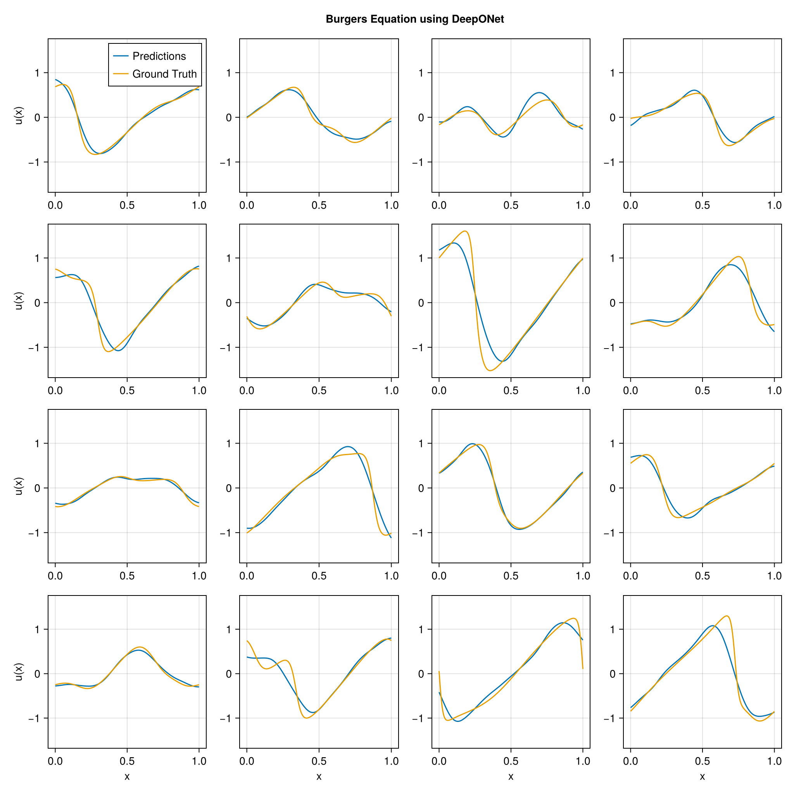

using DataDeps, MAT, MLUtils
using PythonCall, CondaPkg # For `gdown`
using Printf
const gdown = pyimport("gdown")
register(
DataDep(
"Burgers",
"""
Burgers' equation dataset from
[fourier_neural_operator](https://github.com/zongyi-li/fourier_neural_operator)
mapping between initial conditions to the solutions at the last point of time \
evolution in some function space.
u(x,0) -> u(x, time_end):
* `a`: initial conditions u(x,0)
* `u`: solutions u(x,t_end)
""",
"https://drive.google.com/uc?id=16a8od4vidbiNR3WtaBPCSZ0T3moxjhYe",
"9cbbe5070556c777b1ba3bacd49da5c36ea8ed138ba51b6ee76a24b971066ecd";
fetch_method=(url, local_dir) -> begin
pyconvert(String, gdown.download(url, joinpath(local_dir, "Burgers_R10.zip")))
end,
post_fetch_method=unpack
)
)
filepath = joinpath(datadep"Burgers", "burgers_data_R10.mat")
const N = 2048
const Δsamples = 2^3
const grid_size = div(2^13, Δsamples)
const T = Float32
file = matopen(filepath)
x_data = reshape(T.(collect(read(file, "a")[1:N, 1:Δsamples:end])), N, :, 1)
y_data = reshape(T.(collect(read(file, "u")[1:N, 1:Δsamples:end])), N, :, 1)
close(file)
x_data = permutedims(x_data, (2, 1, 3))
grid = reshape(T.(collect(range(0, 1; length=grid_size)')), :, grid_size, 1)
1×1024×1 Array{Float32, 3}:
[:, :, 1] =
0.0 0.000977517 0.00195503 … 0.997067 0.998045 0.999022 1.0
using Lux, NeuralOperators, Optimisers, Zygote, Random
using LuxCUDA
const cdev = cpu_device()
const gdev = gpu_device()
deeponet = DeepONet(;
branch=(size(x_data, 1), ntuple(Returns(32), 5)...),
trunk=(size(grid, 1), ntuple(Returns(32), 5)...),
branch_activation=tanh,
trunk_activation=tanh
)
ps, st = Lux.setup(Random.default_rng(), deeponet) |> gdev;
((branch = (layer_1 = (weight = Float32[0.06816576 -0.05220134 … 0.051760055 0.06020232; -0.067856506 0.05066321 … 0.02222166 -0.019634703; … ; 0.0426763 0.0356377 … -0.0025368116 0.048329253; 0.019790668 0.00967863 … 0.08533972 -0.037739363], bias = Float32[0.026176728, 0.014907103, -0.027064238, 0.0066625774, -0.00079182535, -0.009312324, -0.022877287, 0.024818335, -0.019473936, -0.03109894 … 0.007666927, -0.012899272, 0.027518827, -0.009679589, 0.009333618, 0.028486926, -0.022178434, -0.0055853426, -0.026745759, -0.030287035]), layer_2 = (weight = Float32[-0.17547856 0.41950145 … 0.051259965 -0.24637681; 0.3740388 0.34474015 … -0.087214895 0.24477176; … ; -0.19321816 0.015478414 … -0.054965105 -0.10129882; -0.41747808 0.39144713 … -0.056951266 -0.34919706], bias = Float32[0.13553564, 0.16041112, -0.07422785, -0.04384859, -0.1702278, 0.014399239, -0.15459235, 0.14381108, 0.15314613, 0.13195868 … -0.075187325, -0.12689404, 0.14191489, 0.08291391, 0.06812092, -0.17138898, 0.08693258, 0.15972517, -0.094578475, -0.00078294094]), layer_3 = (weight = Float32[-0.3885922 0.35411146 … 0.32738593 -0.26107618; 0.29083002 0.47988862 … 0.10318953 -0.38913995; … ; -0.015589983 -0.040344507 … 0.01982395 -0.11052687; -0.24218439 0.008770886 … -0.120412715 0.13682346], bias = Float32[0.1265244, 0.110532194, 0.13468876, 0.09358428, -0.034665067, -0.049705338, 0.04205111, -0.14913015, 0.112141006, -0.014860473 … 0.027635647, -0.17095034, -0.09977548, -0.0036449016, -0.11816324, -0.01508716, -0.17655487, 0.013101306, 0.15746166, 0.043167014]), layer_4 = (weight = Float32[0.08360228 0.30741584 … -0.1506194 0.28589258; 0.31348172 0.18746553 … 0.2380988 0.2743189; … ; -0.41157794 0.24827062 … -0.002918255 0.4025305; 0.20847106 0.21120755 … 0.40072227 -0.42636508], bias = Float32[-0.016918462, 0.085251376, -0.15484533, -0.020345105, 0.12582909, 0.02462027, 0.1289603, 0.14076063, -0.105776094, -0.05814295 … 0.012095808, 0.17082156, -0.022296168, -0.07084148, -0.012151906, 0.15156542, 0.116183035, -0.020683018, -0.151925, 0.07690266]), layer_5 = (weight = Float32[0.270717 0.23419522 … 0.32553908 -0.45609045; 0.26308995 0.37541494 … 0.35790756 -0.014594804; … ; -0.21039541 0.3932283 … 0.12364998 -0.23675084; 0.23686947 -0.01377586 … 0.26517907 0.41624412], bias = Float32[0.14307791, 0.09224234, -0.09876665, -0.13965389, 0.12117483, 0.06848142, -0.09845223, -0.17636056, 0.08325467, -0.17209384 … -0.017494587, 0.02894456, 0.076443486, -0.17170383, 0.12958978, -0.026179558, -0.01558188, -0.095450915, -0.06678625, 0.06740457])), trunk = (layer_1 = (weight = Float32[0.0985189; 2.6544175; … ; -0.084555924; -0.57210207;;], bias = Float32[0.9213592, 0.54570174, -0.33772063, -0.88304687, -0.52711976, 0.419039, -0.009639502, 0.20138621, -0.8137965, -0.5185617 … -0.35276723, 0.5632808, 0.30472922, 0.64938843, -0.9788244, 0.41940713, -0.23960114, -0.47972572, 0.76473653, -0.051104188]), layer_2 = (weight = Float32[-0.015785623 -0.41800147 … -0.29134822 -0.09794943; 0.037366636 -0.11868643 … -0.27515262 -0.1008978; … ; 0.44508368 0.38673794 … -0.48666945 0.47538236; -0.29620433 -0.01089155 … -0.14125313 -0.010934134], bias = Float32[0.100243285, 0.09377149, -0.12969759, 0.080722004, -0.13477913, -0.14634122, 0.024030153, 0.10181787, -0.15297356, -0.11510123 … 0.107843414, 0.12016707, 0.05908301, -0.054234542, 0.16033572, 0.02694899, 0.0040181964, -0.15812404, -0.11440475, -0.07201379]), layer_3 = (weight = Float32[-0.08371805 0.26903695 … 0.15139978 0.31138417; 0.070796534 -0.28718054 … 0.10530642 -0.2812568; … ; 0.40925008 0.15206414 … 0.40603524 -0.23503399; 0.36838105 0.11128717 … -0.23776257 -0.02070178], bias = Float32[0.15555479, 0.12923522, -0.016247906, -0.032061614, 0.06804975, 0.022030516, -0.10580823, -0.08874849, -0.16936646, -0.063812666 … -0.08294799, 0.11357634, -0.0001521712, -0.13539582, 0.060254313, 0.04017962, -0.10790965, 0.04327084, 0.025764221, 0.021232992]), layer_4 = (weight = Float32[0.4123658 -0.26056784 … 0.15251553 0.04132016; -0.103277065 -0.24442586 … 0.30744937 0.38570175; … ; -0.008748438 -0.42761657 … -0.024147525 -0.22506748; -0.43238357 0.25677118 … -0.40001345 0.101258114], bias = Float32[-0.026918644, 0.099246785, -0.071158424, 0.1595196, -0.06635159, 0.16462852, 0.07575348, -0.015951866, -0.15440093, -0.010916603 … -0.15942578, 0.09681866, 0.015109877, 0.05141884, 0.011479685, -0.0029772534, 0.15311132, 0.09761962, -0.15332745, -0.055571146]), layer_5 = (weight = Float32[-0.4626204 -0.08764018 … 0.17414576 -0.41780522; 0.4118546 -0.46568587 … 0.28298283 -0.14601374; … ; 0.465476 0.15878583 … 0.005533254 -0.0652867; 0.16872911 0.012135235 … -0.35115793 0.19653536], bias = Float32[0.1469271, -0.052075993, -0.15130985, -0.1155126, 0.165037, 0.040904738, -0.10600853, 0.1285269, 0.03428992, 0.11609347 … -0.06465181, -0.010121186, -0.10904888, -0.064028986, 0.12253604, -0.037452742, -0.018623365, 0.124603994, -0.048615567, -0.16663301])), additional = NamedTuple()), (branch = (layer_1 = NamedTuple(), layer_2 = NamedTuple(), layer_3 = NamedTuple(), layer_4 = NamedTuple(), layer_5 = NamedTuple()), trunk = (layer_1 = NamedTuple(), layer_2 = NamedTuple(), layer_3 = NamedTuple(), layer_4 = NamedTuple(), layer_5 = NamedTuple()), additional = NamedTuple()))
x_data_dev = x_data |> gdev
y_data_dev = y_data |> gdev
grid_dev = grid |> gdev
function loss_function(model, ps, st, ((v, y), u))
û, stₙ = model((v, y), ps, st)
return MAELoss()(û, u), stₙ, (;)
end
function train_model!(model, ps, st, data; epochs=5000)
train_state = Training.TrainState(model, ps, st, Adam(0.0001f0))
for epoch in 1:epochs
_, loss, _, train_state = Training.single_train_step!(
AutoZygote(), loss_function, data, train_state)
if epoch % 25 == 1 || epoch == epochs
@printf("Epoch %d: loss = %.6e\n", epoch, loss)
end
end
return train_state.parameters, train_state.states
end
ps_trained, st_trained = train_model!(
deeponet, ps, st, ((x_data_dev, grid_dev), y_data_dev))
((branch = (layer_1 = (weight = Float32[0.07443638 -0.04665196 … 0.059259135 0.06712459; -0.07211944 0.046596568 … 0.017663259 -0.024062458; … ; 0.030524971 0.023189556 … -0.013968821 0.036516674; 0.015664682 0.0060994215 … 0.08013478 -0.04240841], bias = Float32[0.03267743, 0.04246302, -0.08759687, -0.18177553, -0.12903604, -0.090900525, 0.051171683, -0.11771847, -0.065035634, 0.028373586 … -0.020452444, -0.09540392, 0.031414647, -0.093717106, 0.08761653, -0.007986344, 0.087070756, -0.06307483, -0.098869495, -0.060700644]), layer_2 = (weight = Float32[-0.17857592 0.43076086 … 0.054788165 -0.28150254; 0.36905813 0.3342772 … -0.09080063 0.23569076; … ; -0.26572824 -0.0112959985 … -0.05336313 -0.14718159; -0.40883926 0.3898115 … -0.052856095 -0.34294954], bias = Float32[0.18416259, 0.14286509, -0.022432743, -0.037815083, -0.21692556, 0.003453487, -0.17852223, 0.22079167, 0.13304028, 0.1779745 … -0.089108, -0.13063079, 0.18337217, 0.08039436, 0.081019185, -0.20962544, 0.012867434, 0.15887812, -0.19415265, 0.08249138]), layer_3 = (weight = Float32[-0.37992415 0.28967854 … 0.2646998 -0.3049859; 0.30685273 0.51585966 … 0.11009765 -0.3430471; … ; -0.03690159 -0.03895317 … -0.010925832 -0.09763444; -0.2409288 0.00056354556 … -0.20394906 0.117311016], bias = Float32[0.059227567, 0.14276898, 0.19694723, 0.111355856, 0.014015143, -0.050098434, 0.110245794, -0.15013856, 0.30043435, -0.0598508 … -0.040876467, -0.19524951, -0.12850432, 0.015171534, -0.18803015, 0.04677664, -0.19238733, -0.036095724, 0.17527829, 0.07437617]), layer_4 = (weight = Float32[0.07966547 0.31400472 … -0.13219017 0.28458694; 0.25878635 0.18469045 … 0.1675675 0.3250591; … ; -0.4305137 0.2624273 … -0.06285844 0.47496954; 0.16604401 0.21976276 … 0.42221436 -0.37053072], bias = Float32[-0.019642264, 0.05178892, -0.18777213, -0.023379663, 0.16821638, 0.07937328, 0.14898698, 0.22443809, -0.038742002, -0.07645671 … 0.019353041, 0.11813816, -0.06332307, -0.07286002, -0.0376661, 0.16944987, 0.11252142, -0.0035499402, -0.11903087, 0.0040737833]), layer_5 = (weight = Float32[0.26870346 0.23964721 … 0.3060663 -0.5023096; 0.30989653 0.37568176 … 0.31163147 -0.03410906; … ; -0.18982747 0.37310812 … 0.15175164 -0.25037602; 0.21605581 -0.034954734 … 0.26944342 0.3971756], bias = Float32[0.12113672, 0.1119925, -0.08842025, -0.20266396, 0.055566855, 0.09920793, -0.13390172, -0.203561, 0.0002614557, -0.24104004 … -0.009373077, 0.028463496, 0.05471677, -0.17333986, 0.034739435, -0.025766868, -0.07227647, -0.18355417, -0.13831766, 0.05799146])), trunk = (layer_1 = (weight = Float32[0.099641874; 2.6584578; … ; -0.08478833; -0.58163524;;], bias = Float32[0.92499524, 0.5351741, -0.35465744, -0.9016892, -0.5347486, 0.39150456, -0.007826336, 0.1979993, -0.8322125, -0.50869495 … -0.30137265, 0.5556489, 0.29641414, 0.6452661, -0.98898524, 0.46779525, -0.2699728, -0.47188827, 0.77084315, -0.06010198]), layer_2 = (weight = Float32[-0.0118657 -0.4136701 … -0.28749955 -0.10175691; 0.062188406 -0.08448961 … -0.2502761 -0.12581466; … ; 0.40644073 0.36247614 … -0.52937704 0.4434935; -0.30999154 -0.019151447 … -0.15567923 -0.005799573], bias = Float32[0.10412994, 0.11857219, -0.11849182, 0.077472754, -0.12538907, -0.14632407, 0.053426746, 0.1077074, -0.16165711, -0.12043077 … 0.12229569, 0.10794166, 0.042819843, -0.043252524, 0.16445203, 0.010917051, -0.0049922494, -0.15908988, -0.15479156, -0.08605735]), layer_3 = (weight = Float32[-0.0671269 0.29596913 … 0.16086641 0.29278234; 0.074494235 -0.278612 … 0.09553304 -0.28737685; … ; 0.4226356 0.13370253 … 0.4425386 -0.21082684; 0.35934415 0.1128176 … -0.24509245 -0.02244692], bias = Float32[0.1388403, 0.121490754, 0.0038097582, -0.026834453, 0.07042611, 0.0332071, -0.11585662, -0.08089554, -0.15941444, -0.061936636 … -0.077723555, 0.12878956, -0.007941918, -0.1390277, 0.070687085, 0.046059344, -0.11013745, 0.033412013, 0.03298274, 0.019800402]), layer_4 = (weight = Float32[0.40295792 -0.28001133 … 0.13352872 0.08787817; -0.113472655 -0.24283187 … 0.29263204 0.38010135; … ; -0.008917598 -0.41899964 … -0.008196509 -0.2383542; -0.40827903 0.24502365 … -0.41148293 0.1335662], bias = Float32[-0.011526708, 0.09536761, -0.076830424, 0.16311288, -0.06468262, 0.16178185, 0.07734822, -0.013089138, -0.14081746, -0.028720958 … -0.15121314, 0.100810766, 0.005934109, 0.052802257, -0.0052094604, -0.010914204, 0.1576969, 0.09269761, -0.16070591, -0.045882817]), layer_5 = (weight = Float32[-0.4640239 -0.07715805 … 0.19344507 -0.43285668; 0.40078107 -0.46539724 … 0.28024843 -0.16486186; … ; 0.45501044 0.16210604 … -0.0064459313 -0.09216272; 0.21388644 0.033228986 … -0.31710562 0.20120351], bias = Float32[0.15123521, -0.05491325, -0.104243346, -0.10744567, 0.19713613, 0.030328186, -0.117368855, 0.11303678, 0.042290576, 0.12907195 … -0.059731156, -0.011627232, -0.16290924, -0.053893693, 0.15764414, -0.044894587, -0.013217705, 0.12017854, -0.042436637, -0.14743255])), additional = NamedTuple()), (branch = (layer_1 = NamedTuple(), layer_2 = NamedTuple(), layer_3 = NamedTuple(), layer_4 = NamedTuple(), layer_5 = NamedTuple()), trunk = (layer_1 = NamedTuple(), layer_2 = NamedTuple(), layer_3 = NamedTuple(), layer_4 = NamedTuple(), layer_5 = NamedTuple())))
using CairoMakie
pred = first(deeponet((x_data_dev, grid_dev), ps_trained, st_trained)) |> cdev
begin
fig = Figure(; size=(1024, 1024))
axs = [Axis(fig[i, j]) for i in 1:4, j in 1:4]
for i in 1:4, j in 1:4
idx = i + (j - 1) * 4
ax = axs[i, j]
l1 = lines!(ax, vec(grid), pred[idx, :, 1])
l2 = lines!(ax, vec(grid), y_data[idx, :, 1])
i == 4 && (ax.xlabel = "x")
j == 1 && (ax.ylabel = "u(x)")
if i == 1 && j == 1
axislegend(ax, [l1, l2], ["Predictions", "Ground Truth"])
end
end
linkaxes!(axs...)
fig[0, :] = Label(fig, "Burgers Equation using DeepONet"; tellwidth=false, font=:bold)
fig
end
